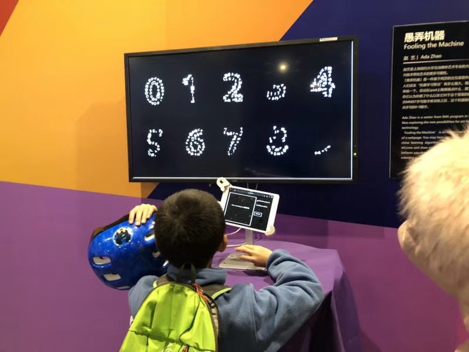
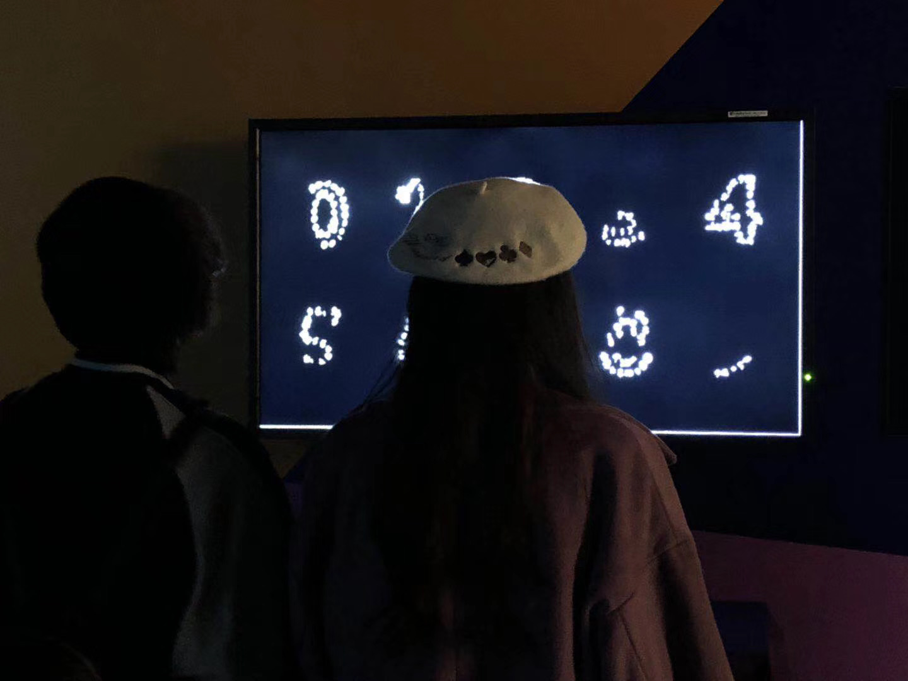

Fooling the Machine
Interactive Crowd-funding Art
Nature of Code Class Project, New York
Apr 17th, 2017
The project was the final project of Nature of Code-Intelligence Learning, taught by Daniel Shiffman at ITP, NYU. Through the sever-week course, I was really fascinated by Machine Learning Models that recognize an image as a dog after training. There are also people afraid of the idea, questioning whether machines will take over human beings a day. This project was made as a response to the question.
As an audience, you can come and draw something on the tablet. No matter what you draw, the machine learning model will categorize the drawing as a hand-written digit and display it on the screen to form the digit later.

The model was trained on the MNIST dataset so it can only categorize an image into one of ten digits. The project is meant to tell the audience that Machine Learning models are tools for us so that we should train them carefully and take the full advantage out of them.


In 2018, Fooling the Machine was invited to the Infinite Exhibition held by MixCity in Shanghai.
< prev
Home
next >